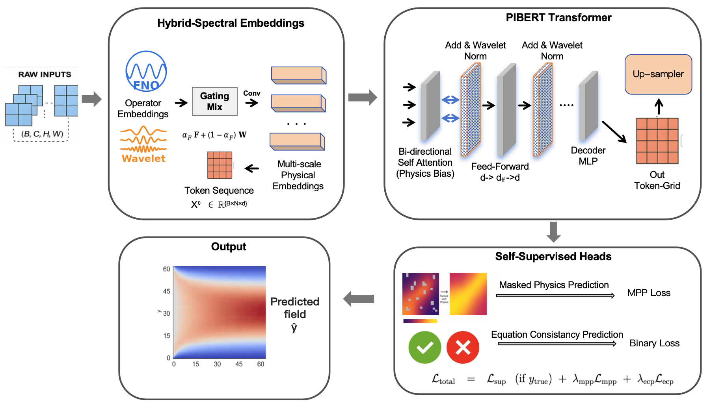
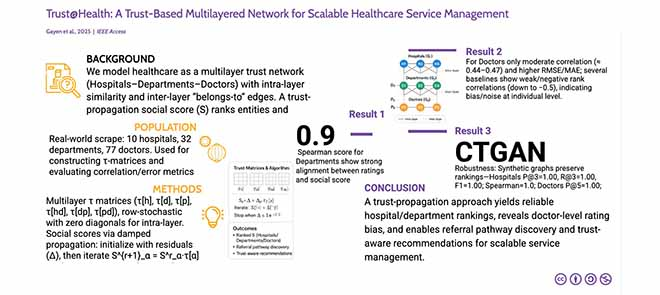
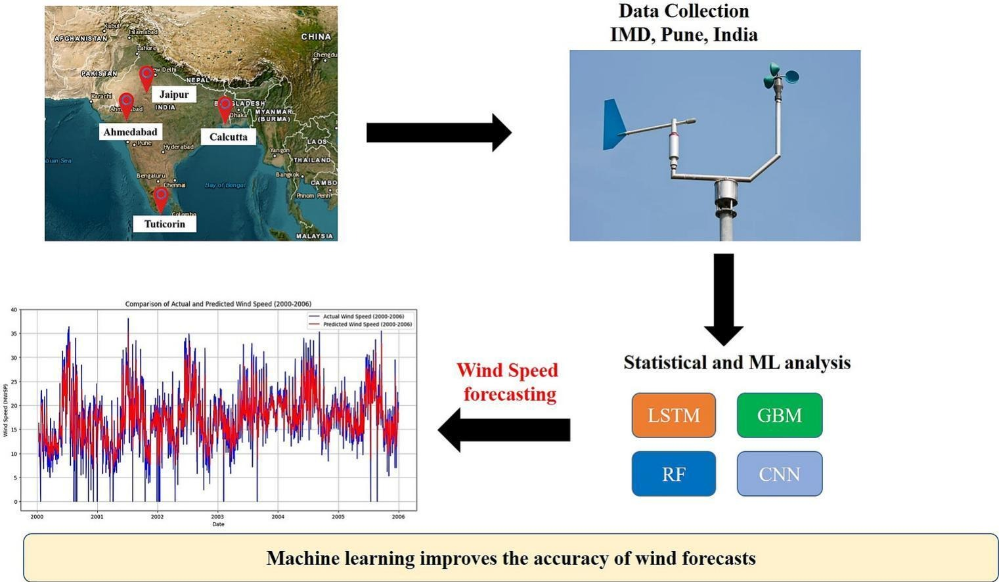

Sam Chakraborty, MSc.
Physical AI Researcher · LLMs, CFD & Complex Networks
Welcome
Welcome to my personal academic website. I am an AI researcher working at Shanghai Jiao Tong University specializing in AI4Science, Computational Fluid Dynamics, PDE solvers, Large Language Models, Network Science, and Agentic Systems. My work spans Language Models, Computational Intelligence, Decision Making, Cognition, Optimization, Game Research, and Physics-Informed ML.
I'm open to research and technical collaborations in Mainland Europe, China, Singapore and the US. If you work on AI in Science, Physics, Social Dynamics, or innovative deep learning/optimization, let's connect and push research boundaries together.
Research Interests
AI agents & LLMs
Large Language Models, RAG, Multi-Agent Systems
Computational Physics
CFD, PDE Solvers, Physics-Informed ML
Complex Networks
Social Networks, Scientometrics, Cognitive Networks
AI4Science
Scientific Computing, Simulations, Materials Design
Explore
Publications
Journals, Conferences & Preprints
Projects
GitHub Repositories & Code
Blog
Research & Anecdotes
Reviewer
- Ocean Engineering
- ACM Transactions on Computing for Healthcare
- ICECCME — The 6th International Conference on Electrical, Computer, Communications and Mechatronics Engineering, Bali, Indonesia
- ICECET — 5th International Conference on Electrical, Computer and Energy Technologies, Rome, Italy
My Favorites
- Future: AGE OF BEYOND: If Humans & AI United — This is humanity's future we should all strive for.
- Video: BBC - The Fantastic Mr Feynman — A fascinating BBC feature on Richard Feynman (my all time mentor from the great beyond!), highlighting his genius, curiosity, and unique way of seeing the world.
- Sci-fi show: Star Wars — An epic space opera set in a galaxy far, far away, spanning a rich universe of heroes, villains, and the eternal struggle between light and darkness.
- Sci-fi novel: Isaac Asimov — Foundation series — A sweeping saga of the decline and rebirth of a galactic empire, following a mathematician who uses psychohistory to guide humanity across millennia of history.
Publications
My research contributions spanning AI, Network Science, Healthcare, and Computational Physics
View on Google ScholarSelected Publications


Journal Articles

Under Review
Conference Proceedings
Preprints
GitHub Projects
Explore my work in AI, Machine Learning, Computational Physics, and Web Development
Visit GitHub ProfileLoading projects from GitHub...
Education
My academic journey across three continents

Doctor of Philosophy
LLMs & Computational Fluid Dynamics
Shanghai Jiao Tong University
Research focus on CFD, DEM, Simulations, LLMs, Physics Informed Machine Learning, and Computational Chemistry.
Master of Science
Data Science and Analytics
University College Cork
Thesis: "Genchron Network Analytics tool for Medieval Literature Studies" (Honours). Modules included Deep Learning, Machine Learning, Statistical Modelling, Python for Data Science.
Bachelor of Technology
Computer Science & Engineering
Techno India University
Thesis: "Scoring SM Posts using Behavioural Inputs using Social Networks". Grade: 8.27/10
Experience
My professional journey across research, industry, and academia
Current Positions
CGS Doctoral Fellow (PhD)
Shanghai Jiao Tong University
Dept. of Chemical Engineering and Chemistry
Computer Scientist RA (Gen AI)
University College Cork
Dept. of Computer Science
Visiting Lecturer
Techno India University
Dept. of Computer Science and Engineering
Researcher
CAINS Labs
India
Industry Experience
Research Assistant - AI Engineer (LLMs & GenAI)
University College Cork
- Led 3 cross-domain R&D projects leveraging Large Language Models, improving scalability by 40%
- Developed a visual analytics platform for 20+ datasets, boosting insight extraction by 50%
- Designed LLM-based chatbot for real-time path accuracy using PostGIS, up by 15%
- Integrated GCP map plugins for geospatial features, up by 30%
- Evaluated chatbot responses with BLEU, ROUGE (35% improvement)
- Implemented RAG-based approaches for better context awareness (25% improvement)
Fullstack Software Engineer - Cloud
Virtusa
- Developed 2 SaaS-based cloud apps in ServiceNow environment, reducing manual processing by 40%
- Led team of 8 in project development and system integration, cutting deployment time by 25%
- Integrated payment gateways, MFA, and AWS/GCP services, raising security compliance by 50%
Academic Experience
Teaching Assistant
University College Cork - Dept. of Computer Science
- Conducted Lectures on Programming with Python I
- Topics: Introduction to Python, Control Structures, Functions, Data Structures, Error Handling, OOP, APIs & Web Scraping, Data Processing, Visualization
- Data Visualization & Machine Learning fundamentals
- Storytelling with Data, Big Data Visualization, Dashboard Design
Google Developer Club (GDG) Mentor
Techno India University
- Lectures on Machine Learning & Deep Learning with GCP
- Data prep with BigQuery ML, model training, deployment on GCP
- GCP Fundamentals, Compute & Storage, IAM, Cloud Functions, BigQuery, DevOps
Blog
Research insights, anecdotes, and reflections on my academic journey